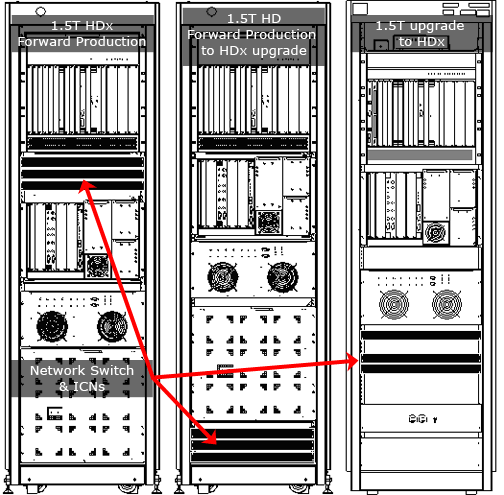
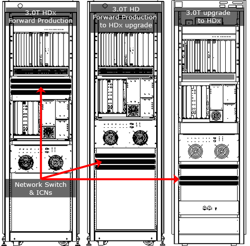
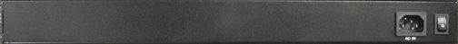

Operating Documentation
Direction 5670006, Rev# 1
Discovery MR750w GEM Service Methods
Module Version 2.0, Version Date 6/18/09
Operating Documentation |
| Required Persons | Preliminary Reqs | Procedure | Finalization |
|---|---|---|---|
| 1 | Not Applicable | 15 mins | Not Applicable |
The Milan 16-Port 10/100 Fast Gigabit Ethernet Workgroup Switch (shown in Illustration 3) is used to receive and transfer data between the host computer and the Systems Cabinet and is part of the VRE subsystem.
| Item | Qty | Effectivity | Part# | Manufacturer | |
|---|---|---|---|---|---|
| Standard Field Hand Tool Kit | 1 | - | - | - | |
| ||||
| Electrocution Hazard! | ||||
| Dangerous voltages Exist Within The System Cabinet When energized. | ||||
| Refer to System Cabinet Lock Out / Tag Out |
| Condition | Reference | Effectivity |
|---|---|---|
Lock Out / Tag Out the system cabinet (see System Cabinet Lock Out / Tag Out) | - | - |
Locate the Gigabit (network) switch in the system cabinet. Depending on the configuration of your system, the Gigabit switch can be located either in the middle or bottom of the MGD Chassis. It can be easily identified by locating the group of RJ45 jacks on the front of the chassis (see Illustration 1 and Illustration 2).
Illustration 1: Switch Location - 1.5T

Illustration 2: Switch Location - 3.0T

Remove the RJ45 connectors from the front of the switch, taking note of the order and placement of the terminal wires that they plugged in to (see Illustration 3).
Illustration 3: Gigabit Switch - Front View
Using a Phillips screw driver, unscrew the four (4) screws on the front of the switch so you can pull the switch forward to remove it from the cabinet.
Remove the power plug from the outlet at the back of the switch. (see Illustration 4).
Illustration 4: Gigabit Switch - Rear View

If a returnable FRU, securely repack the defective switch into its packaging and send it back to its respective destination.
Reconnect all connectors in their original correct RJ45 jacks.
Plug in the switch's power connection.
Verify that the power switch is in the ON position (see Illustration 4).
Secure the switch into its original location in the system cabinet by tightening its four (4) screws.
From the Common Service Browser, go to the Utilities tab, and then the VRE folder. Then click Power On.
Reset the TPS.
If reset is successful, this unit is working. Otherwise, run all tests under MGD Host Datapath to troubleshoot.